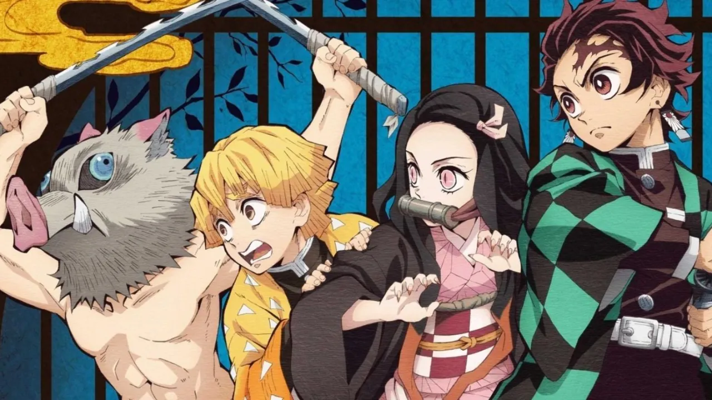

Estamos en la era Taisho de Japón. Tanjiro, un joven que se gana la vida vendiendo carbón, descubre un día que su familia ha sido asesinada por un demonio.
Para empeorar las cosas, su hermana menor Nezuko, la única superviviente de la masacre, ha sufrido una transformación en demonio.
Destrozado por los acontecimientos Tanjiro decide convertirse en un cazador de demonios para poder devolver a su hermana a la normalidad y matar al demonio que masacró a su familia.
